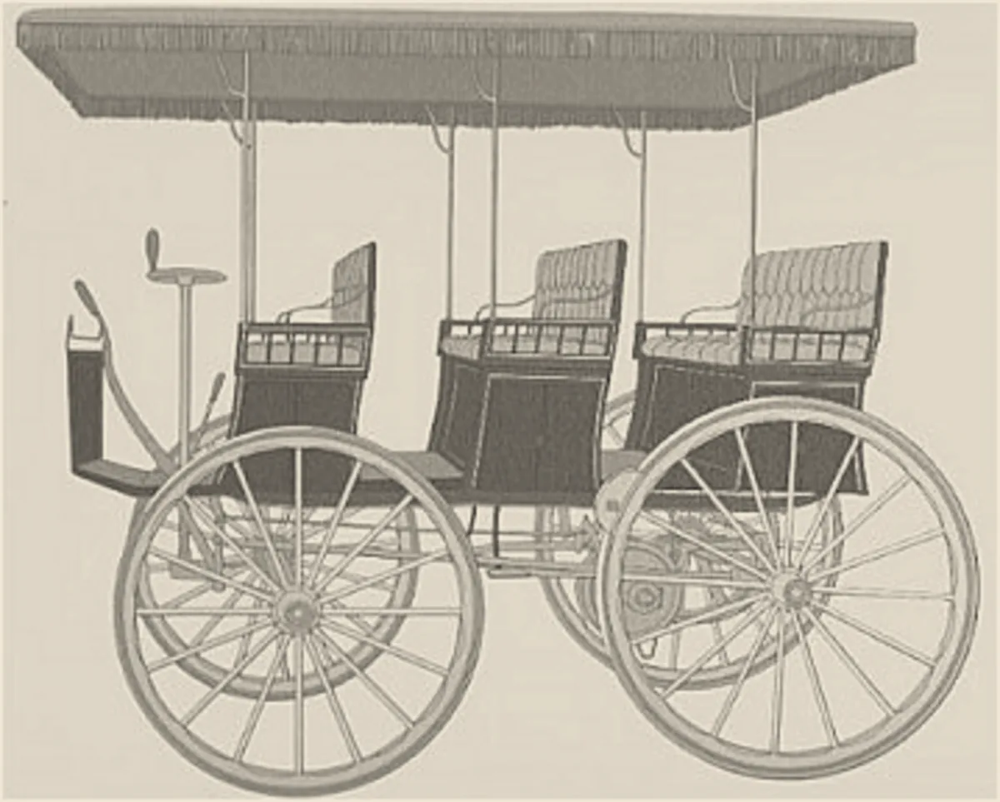

· Edición 55 · 4 min de lectura
Colombia exporta petróleo, pero el carro más vendido del año es eléctrico

Colombia exporta petróleo, pero el carro más vendido del año es eléctrico
En pocas palabras. En lo que va de 2026 se matricularon 44.387 carros eléctricos, más del doble que en todo 2025, y el Tesla Model Y es el carro más vendido del año. A usted le toca en la gasolina, en el aire y en el precio del próximo carro: el país que vive en buena parte de exportar combustibles se está pasando al enchufe. Lo empujaron los impuestos bajos, y la ley de rescate propone subirlos del 5% al 19%: el Congreso decide si el arranque sigue o se frena.
El dato curioso. En 1899, el belga Camille Jenatzy fue el primero en pasar de 100 kilómetros por hora en un carro: llegó a 105,88. El carro era eléctrico y se llamaba La Jamais Contente, «la nunca satisfecha». Hacia 1900, cerca de un tercio de los carros de Estados Unidos eran eléctricos, según su Departamento de Energía. Luego llegó la gasolina barata, y el enchufe esperó un siglo.
Qué mejoró. En octubre, por primera vez en siete meses, el carro más vendido del mes no fue un Tesla, sino un Kia K3 de gasolina. En el año, el Model Y sigue primero, con 15.265.
En un país donde 38 de cada 100 dólares exportados en 2025 salieron de combustibles y minería, la noticia fue que un carro de gasolina volvió a ganar.
En octubre fueron 4.603 de 32.175 carros nuevos, 14 de cada 100, según Fenalco y la ANDI, los gremios del comercio y la industria.
Fuente: Fenalco y ANDI, con datos del RUNT, según Gestión Solidaria, Valora Analitik y Portafolio
Ver datos
| carros | |
|---|---|
| 2023 | 3.677 |
| 2024 | 9.178 |
| 2025 | 19.724 |
| 2026 | 44.387 |
Cada uno deja de quemar gasolina en la calle, y aquí la luz viene sobre todo del agua: 63 de cada 100 megavatios, según XM, el operador de la red.
¿Por qué mejoró?
- Impuestos bajos. Arancel cero y 5% de IVA, en vez de 19%. La Ley 1964 de 2019 sumó un tope al impuesto vehicular y descuento en el SOAT.
- Precios que bajaron. Tesla llegó a finales de 2025 con el Model Y desde 119,9 millones de pesos, y algunos rivales bajaron hasta 80 millones, según Fasecolda, el gremio de las aseguradoras.
- Gasolina más cara. Por kilómetro, cargar la batería sale mucho más barato.
¿Qué lo amenaza? La ley de rescate subiría el IVA de eléctricos e híbridos al 19% y quitaría su devolución. Un carro de 100 millones antes de impuestos pasaría de 105 a 119. Regiría desde 2028.
En 2024, el Gobierno de Gustavo Petro propuso el 19% para los híbridos, y se hundió con su reforma tributaria. El de Abelardo de la Espriella lo propone ahora también para los eléctricos. Gobiernos opuestos, misma idea.
Ya pasó antes. En Noruega, 96 de cada 100 carros nuevos de 2025 fueron eléctricos, aunque 57 de cada 100 coronas que exporta vienen del petróleo y el gas. Ese petróleo se quema afuera. El descuento se recorta por escalones: desde 2023 paga IVA la parte del precio que pasa de 500.000 coronas; desde 2026, de 300.000.
Pero ojo.
- ¿Quién se lleva el descuento? Quien compra un carro de más de 100 millones. En Estados Unidos, un estudio de 2016 halló que el 20% más rico recibió cerca del 90% de los créditos tributarios para eléctricos; aquí no hay un estudio así.
- Todavía son pocos. Rondarían 84.000: una fracción de lo que rueda.
Lo que ya habíamos contado. El 8 de octubre contamos cómo el país subió la gasolina de a poco para cerrar el hueco de su subsidio (ver esa edición); eso ayuda a vender eléctricos.
Qué hacer con esto
Para ir pensando. Si va a cambiar de carro, la cuenta podría cambiar en 2028, si el Congreso aprueba el IVA nuevo.
Cómo prepararse. Haga la cuenta con sus kilómetros: con poco uso, el sobreprecio tarda años en pagarse. Los cálculos que circulan suelen ser de las marcas.
Ojo con el cuento. «Crecen más de 200%» impresiona más cuando se parte de poco. Pregunte cuántos son y de cuántos: en octubre, 4.603 de 32.175.
Dos lecturas
Las dos posturas sobre el tema, en su mejor versión
Mantener el 5%. El descuento funcionó y el mercado apenas despega: 14 de cada 100 carros nuevos. Noruega lo recorta por escalones y con el mercado ya maduro. Subirlo de golpe frenaría el ahorro en gasolina y el aire más limpio.
Cobrar el 19%, como a todos. El Estado necesita recaudo, y quien compra un carro de 100 millones no necesita ayuda. Los precios ya bajan solos; ese dinero rendiría más en buses y transporte público.
Quién decide y cuándo
Quién decide. Las comisiones económicas de Senado y Cámara y después las plenarias, con la ley de rescate (proyecto 477 de 2026).
Cuándo. Según la prensa, habría debates en la segunda mitad de noviembre, sin calendario oficial. Las sesiones terminan el 16 de diciembre.
Cómo participar. (Conocimiento general: las sesiones se transmiten y se puede escribir a los ponentes.)
Seguimiento de la decisión
Pendiente · sin fecha fija
Comisiones económicas (terceras y cuartas) de Senado y Cámara, en sesiones conjuntas, y después las plenarias: Aprobar o no el artículo de la ley de rescate (proyecto 477 de 2026 Cámara) que pasaría los vehículos eléctricos e híbridos del 5% al 19% de IVA y quitaría la devolución de ese impuesto.
El Gobierno radicó la ley el 29 de octubre de 2026. Según la mayoría de los medios, el cambio regiría desde el 1 de enero de 2028; El Colombiano dice que desde que la ley entre en vigor. Según la prensa, las comisiones sesionarían en la segunda mitad de noviembre; no es un calendario oficial. Las sesiones ordinarias terminan el 16 de diciembre.
La paradoja del día
Lo más absurdo de la edición, en dos líneas
La ley de rescate cobraría impuesto a las gaseosas sin azúcar y le quitaría el descuento a los carros sin gasolina. Portarse bien, al parecer, también tiene tarifa.
Para conversar
La pregunta. Si un eléctrico y uno de gasolina costaran lo mismo, ¿qué le haría dudar: la carga, la batería o la costumbre?
Para leer más
Libros para seguir con el tema
Cómo funciona el mundo. Una guía científica de nuestro pasado, presente y futuro, de Vaclav Smil (Debate, 2023). El científico checo canadiense explica cuánto depende la vida diaria del petróleo y del gas, y por qué cambiar de energía toma décadas. Sirve para no exagerar ni lo que ya cambió ni lo que falta.
¿Le interesa ver las fuentes?
Todos los documentos y datos que usamos
34 fuentes: 1 académica, 4 oficiales, 2 de datos, 3 de organizaciones, 22 de prensa, 2 de referencia.
- Prensa El Carro Colombiano (noviembre de 2026). Los 20 carros más vendidos de Colombia en octubre de 2026: ¡Kia K3 destronó a Tesla!
- Prensa Blu Radio (noviembre de 2026). Los 20 carros más vendidos en Colombia en octubre de 2026: Kia K3 lideró la lista
- Prensa Semana (noviembre de 2026). Tesla pierde su racha ganadora en Colombia: este fue el carro que le quitó el trono en octubre
- Prensa El Colombiano, con datos de Fenalco y la ANDI (noviembre de 2026). Ventas de carros en Colombia crecieron 39,5%: estas son las marcas líderes
- Prensa Portafolio (noviembre de 2026). Colombia acelera la compra de carros eléctricos: Tesla lidera un mercado que ya supera las 44.000 unidades
- Prensa La República, con el boletín de Fenalco y la ANDI (octubre de 2026). Matrículas de vehículos eléctricos sumaron 39.784 unidades a septiembre de 2026
- Datos Fenalco. Informe de vehículos eléctricos e híbridos, diciembre de 2025
- Datos Fenalco. Informe de vehículos eléctricos e híbridos, diciembre de 2024
- Prensa Valora Analitik (enero de 2026). Venta de vehículos eléctricos en Colombia se duplicó en 2025 y superó las 19.000 unidades
- Prensa Gestión Solidaria, con el informe de Fenalco y la ANDI (enero de 2025). Fenalco y Andi presentan el Informe de Registro de Vehículos Eléctricos e Híbridos
- Organización Fenalco. Expedida ley que promueve el uso de vehículos eléctricos (Ley 1964 de 2019)
- Oficial Rama Judicial, Sistema de Información Normativa. Ley 1964 de 2019, por la cual se promueve el uso de vehículos eléctricos en Colombia (texto completo)
- Organización Instituto Nacional de Contadores Públicos (INCP). Conozca los beneficios de contar con carro eléctrico en Colombia
- Prensa Portafolio (2026). Carros eléctricos ganan terreno en Colombia por tasas bajas, IVA reducido y alivios tributarios
- Prensa Blu Radio, con datos de Fasecolda (2026). Los 20 carros de BYD, Kia y más que más han bajado de precio tras el éxito de Tesla, según Fasecolda
- Prensa El Colombiano (2026). Tesla desata guerra de precios de carros eléctricos en Colombia; caídas de hasta 80 millones
- Prensa DANE y DIAN, Boletín Técnico de Exportaciones de diciembre de 2025, según RTVC Noticias. Exportaciones de Colombia cerraron 2025 con alza y menor peso de petróleo y carbón en la canasta
- Prensa La República, con datos de XM (2026). Generación de energía hidráulica pesa 62,8% en la matriz energética; la solar, 7,6%
- Oficial Cámara de Representantes. Proyecto de ley de rescate económico 2026 (texto radicado, proyecto 477 de 2026)
- Prensa Semana (octubre de 2026). ¿Aumentaría el precio de los carros híbridos y eléctricos con la Ley de Rescate?
- Prensa El Colombiano (octubre de 2026). Ley de Rescate Fiscal: café, azúcar, prepagada y carros eléctricos pasarían del IVA del 5% al 19%
- Prensa Portafolio (octubre de 2026). Los productos que la Ley de Rescate llevaría al 19 % de IVA: café, frutas, azúcar, aceites, fertilizantes y más
- Prensa Forbes Colombia (12 de diciembre de 2024). Con caída de la tributaria también cayó artículo que buscaba aumentar el IVA a los vehículos híbridos
- Prensa El Colombiano (octubre de 2026). Rescate Fiscal a contrarreloj: ¿le alcanza el tiempo al Gobierno para sacar adelante la ley este año?
- Prensa Electrive (3 de enero de 2026), con datos de la Federación Noruega de Carreteras (OFV). Battery-electric cars dominate Norway – and its fleets
- Oficial Ministerio de Energía de Noruega, Norsk Petroleum. Exports of oil and gas
- Prensa Electrive (4 de diciembre de 2025). Norway to keep tax breaks for electric cars a little longer
- Organización KPMG (diciembre de 2022). Norway: Changes to VAT law effective 1 January 2023
- Académica Borenstein y Davis, Tax Policy and the Economy (2016), documento de trabajo NBER 21437. The Distributional Effects of U.S. Clean Energy Tax Credits
- Oficial Departamento de Energía de Estados Unidos. The History of the Electric Car
- Prensa Motor1 (en español). Jamais Contente: el primer coche que superó los 100 km/h era eléctrico
- Prensa Iowa History Journal. An electrifying Iowan: William Morrison, pioneer of battery technology and automobiles
- Referencia Granautos (blog comercial). Carros eléctricos en Colombia 2026: guía, comparador, ahorro y futuro
- Referencia Casa del Libro (ficha del libro). Cómo funciona el mundo, de Vaclav Smil (Debate)
Glosario
Las palabras técnicas, explicadas
- Carro eléctrico: el que se mueve solo con una batería que se carga en un enchufe; no usa gasolina.
- Híbrido: carro con motor de gasolina y uno eléctrico que se ayudan; la mayoría no se enchufa.
- IVA: impuesto al valor agregado, el que se paga al comprar; la tarifa general es 19%.
- Arancel: impuesto que se cobra a lo que entra del exterior.
- Matrícula: el registro de un carro nuevo ante el tránsito; es la forma de contar cuántos se venden.
- Ley de rescate: el proyecto del Gobierno para cerrar el hueco fiscal con más impuestos y menos gasto, radicado el 29 de octubre.
Nota metodológica
Cómo se hizo esta edición y qué no pudimos verificar
La mezcla de la semana. El lunes fue un cambio de fondo (impuestos saludables). El sábado 7 es «Imaginemos», así que quedan de martes a viernes para un avance, un tema del mundo y uno de ciencia o tecnología. Hoy elegimos un avance de tecnología, que cubre dos de los tres. Queda el mundo para los próximos tres días, y hasta tres nudos.
No lo elegimos solo por la mezcla. Pasa la pregunta de entrada: importará en diez años, cambia sin ruido cómo se mueven y cuánto gastan millones de personas, y hay una decisión en el Congreso y algo que pensar en la casa. Pasa el filtro del avance: una serie de cuatro años de matrículas, un mecanismo conocido (impuestos, precios y gasolina) y una amenaza concreta, el IVA de la ley de rescate. Lo reactivan los datos de octubre, publicados a comienzos de noviembre. Entre los candidatos que llenan la mezcla, es además el que más sorprende: que el carro más vendido del año sea eléctrico se presta para conversar.
Revisamos el archivo: los carros eléctricos no habían sido tema. La gasolina y su fondo de precios aparecen en la edición del 8 de octubre sobre el diésel; por eso lleva ese seguimiento.
Puntaje. De 1 a 3 en cada criterio; peso en la vida y horizonte valen doble (máximo 24).
| Tema | Puerta | Alcance | Peso | Horizonte | Cercanía | Margen | Mirada | Total | Resultado |
|---|---|---|---|---|---|---|---|---|---|
| Carros eléctricos en Colombia | avance | 2 | 2 | 3 | 3 | 3 | 2 | 20 | Elegido (edición 55) |
| Vacunación contra el VPH, por debajo de la meta | nudo | 2 | 3 | 3 | 3 | 2 | 2 | 21 | Sin hecho nacional reciente; la mezcla pide otra puerta |
| Desnutrición en niños indígenas (Unicef) | nudo | 1 | 3 | 3 | 3 | 2 | 2 | 20 | Sin novedad; cerca de la edición sobre la niñez wayuu |
| Sarampión en las Américas (mundo) | contexto | 3 | 3 | 2 | 2 | 2 | 2 | 19 | Sin hecho de los últimos días |
| Tusi y lesiones vasculares | nudo | 2 | 3 | 2 | 3 | 2 | 2 | 19 | Un solo reporte, sin serie de datos |
| Energía solar en Colombia | avance | 3 | 1 | 3 | 3 | 2 | 2 | 18 | Sin novedad; cerca del tema del apagón |
| Ley de inteligencia artificial en salud | fondo | 2 | 2 | 3 | 3 | 2 | 1 | 18 | Sin fecha de primer debate |
| Ley de rescate económico completa | contexto | 3 | 2 | 2 | 3 | 2 | 1 | 18 | En todas las portadas; hoy contamos un artículo |
| Semaglutida genérica | avance | 2 | 3 | 2 | 2 | 1 | 2 | 17 | Sin registro sanitario nuevo |
| Guerra con Irán y precio del petróleo (mundo) | contexto | 3 | 2 | 2 | 3 | 1 | 1 | 16 | En todas las portadas; el diésel ya lo contamos |
| Neutrinos de IceCube (ciencia) | avance | 1 | 1 | 2 | 1 | 1 | 2 | 11 | No pasa la pregunta de entrada |
La vacunación contra el VPH saca un punto más, pero sigue sin el hecho nacional que la reactive, y con cuatro días para tres puertas la mezcla pesa. Ningún otro tema llega a 19 sin chocar con un tema reciente o con la falta de un hecho nuevo, así que hoy hay una sola edición. El informe mundial de energía de la Agencia Internacional de Energía, que podía ser el tema del mundo, se anuncia para noviembre; su página de eventos dice 13 de noviembre, pero la del informe no da día.
Hicimos unas 50 búsquedas en español e inglés. No pudimos abrir los documentos completos, tampoco los boletines de Fenalco y la ANDI ni el texto de la ley de rescate; trabajamos con resúmenes y resultados de búsqueda. De 34 fuentes, 12 no son de prensa: para este tema casi toda la cifra fresca viene de la prensa de motor, que cita los boletines de los gremios.
Quedó sin verificar o con límites:
- Los 44.387 eléctricos de enero a octubre son de Portafolio; La República da 44.445. Coinciden con sumar los 39.784 de septiembre y los 4.603 de octubre. El 14 de cada 100 es nuestro cálculo con las cifras de octubre de Fenalco y la ANDI que publicó El Colombiano.
- Que el Kia K3 cortó una racha de siete meses del Model Y lo dicen El Carro Colombiano y Semana; las 15.265 matrículas del Model Y en el año vienen de El Carro Colombiano.
- Los 84.000 eléctricos que rodarían son nuestra estimación: al parque de 20.392 que había a finales de 2024, según la prensa, le sumamos las matrículas de 2025 y 2026. No descuenta los que salieron de circulación.
- El 38 de cada 100 dólares es el grupo de combustibles y productos de industrias extractivas del DANE, que incluye carbón; no es solo petróleo.
- El 63 de cada 100 megavatios es capacidad instalada a diciembre de 2025, no la energía que de verdad se produjo, que cambia con las lluvias.
- La fecha de 2028 para el IVA nuevo la dicen Portafolio y Semana; El Colombiano dice que regiría desde que se apruebe la ley. El ejemplo de los 100 millones es de Semana.
- La caída de hasta 80 millones viene de un estudio de Fasecolda citado por Blu Radio y El Colombiano; no leímos el estudio.
- El estudio de Borenstein y Davis mide créditos tributarios en Estados Unidos entre 2006 y 2012, no el IVA colombiano. Lo usamos como referencia de quién suele recibir estos descuentos.
- En Noruega, el escalón de 2027 y la eliminación total en 2028 son planes del Gobierno que, según la prensa, aún dependen del presupuesto y de la autoridad europea de vigilancia.
- La fecha exacta del récord de Jenatzy se discute: unas fuentes dicen 29 de abril y otras 1 de mayo de 1899.
- Que el ahorro depende del kilometraje lo dice una guía comercial; no encontramos una evaluación independiente para Colombia.
Seguimiento de decisiones. La ley de sometimiento: el 2 de noviembre la plenaria de la Cámara negó el archivo y aprobó la ponencia, según El Heraldo, y el Senado sigue hoy con el articulado; lo anotamos en la edición del 21 de octubre, sin cambio de estado. El plazo es mañana.
El grabado es un dibujo de 1890 del carruaje eléctrico que William Morrison construyó en Des Moines, tomado de Wikimedia Commons; su estreno se fecha en 1889 o en 1890, según la fuente. Antes probamos dos imágenes de la época que resultaron ser fotografías, y una descarga que el archivo frenó por exceso de consultas.
Los libros: Cómo funciona el mundo no está en el catálogo de Santo & Seña, así que va sin enlace. La editorial y el año los tomamos de la ficha de una librería.